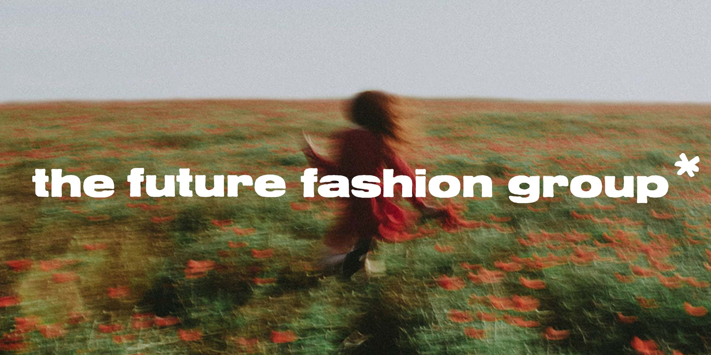
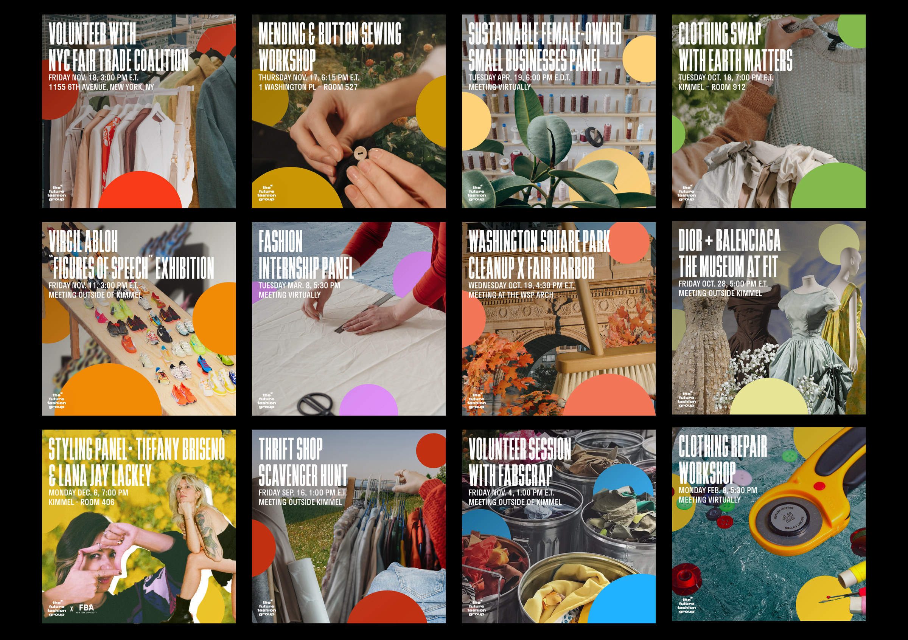
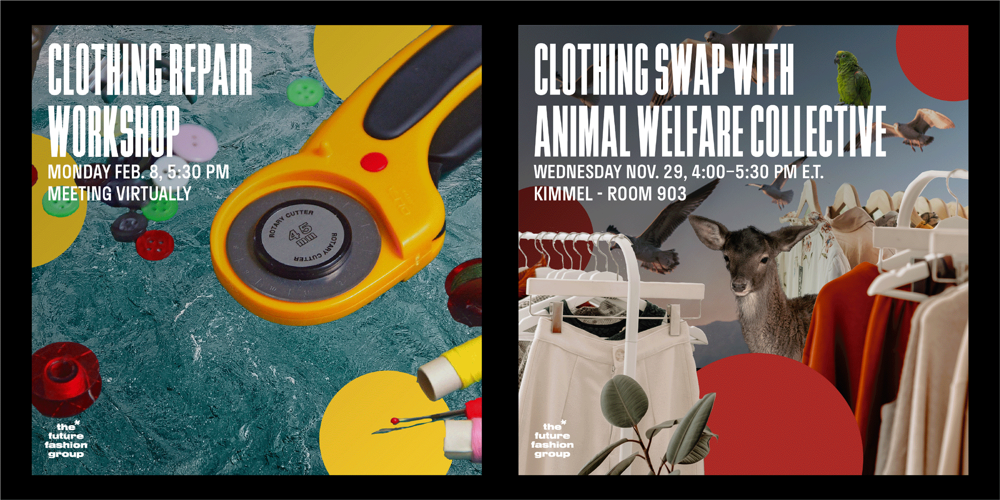
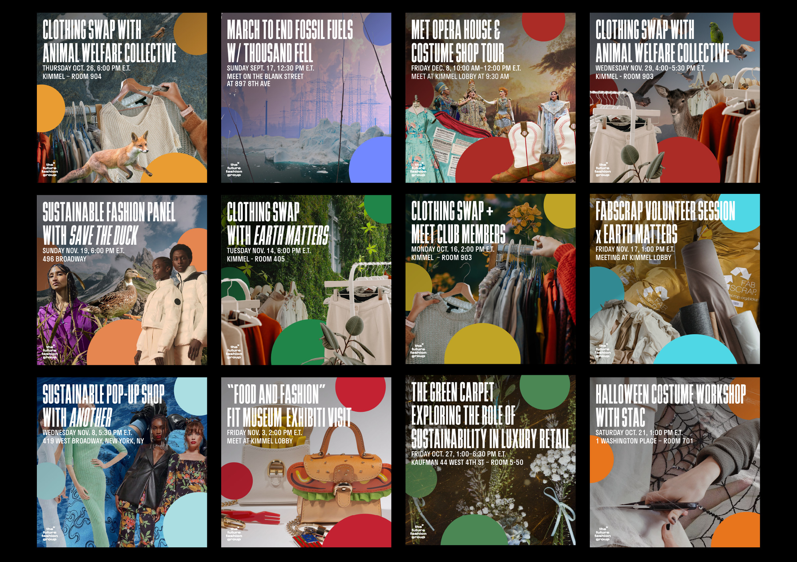
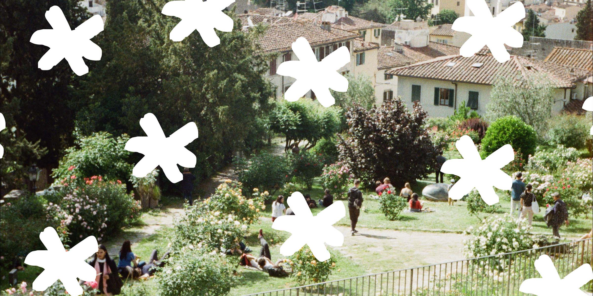
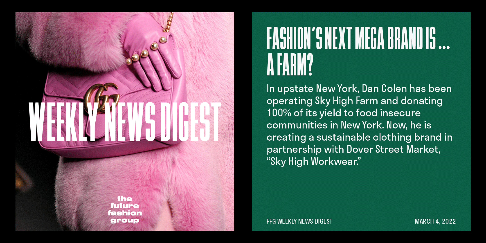
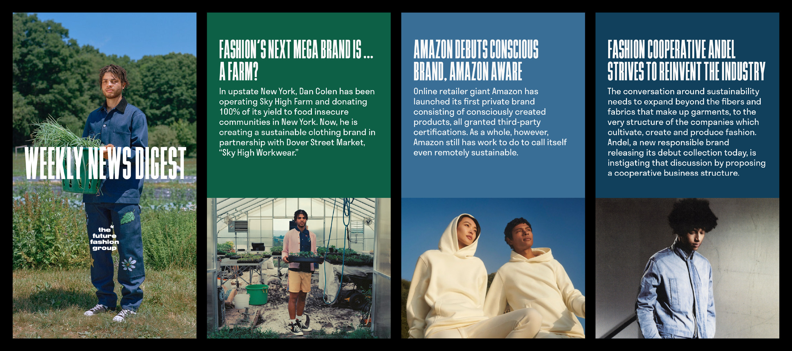
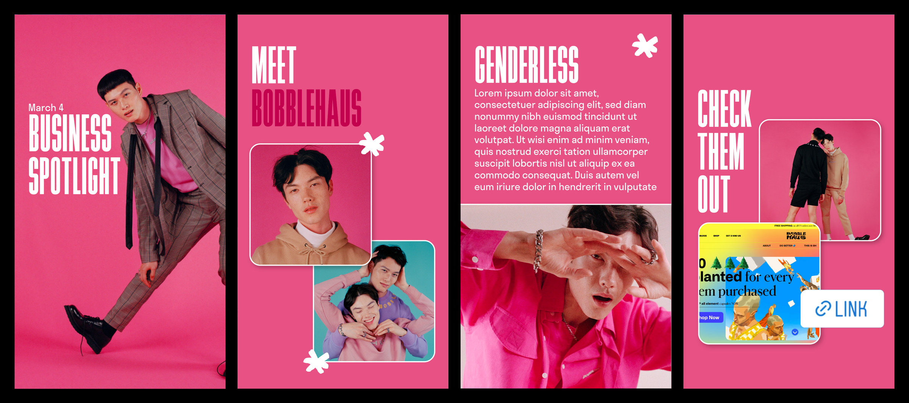
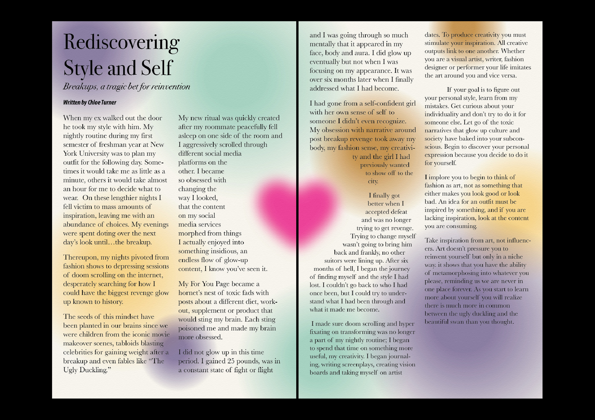
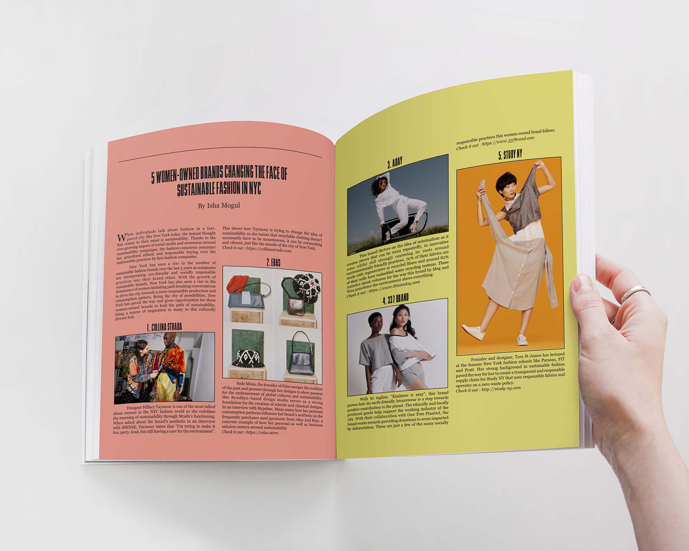

The Future Fashion Group
2022–2024
Lead Designer & Creative Director
Visual Identity, Social, Print, & Art Direction
The Future Fashion Group is a club at NYU focusing on sustainability within the fashion industry. As the head designer, I took on the project of rebranding FFG to create a fun, consistent, and bold aesthetic. FFG’s visual identity is meant to balance a playful and thoughtful style, reflecting a similar dynamic in the fashion industry. The logo consists of the club name written in rough yet organic-like letters, creating a connection with organic approaches to sustainable fashion. At the same time, its bold weight highlights the club’s seriousness, balancing the playful side of the project.
FFG’s social media approach continues to embody dynamic thought as it switches between bright and colorful imagery versus muted and minimal visuals; yet, its publications remain coherent through layout and font choice.

Event Graphics




Social Campaigns



Zine Spreads

